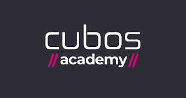

Kontakt Information:
LinkedIn Github Sende ein Email CV Runterladen CV öffnen Diplom 1 Diplom 2Handy +55(84) 99968-5830
Hallo, bin der Jorg Bernhard
Ich bin ein UX/UI - Full-stack developer spezialisert in frontend und backend development für komplexe scal-bare web Apps. Ich habe über 8 Jahre an Erfahrung schöne Internet Programme und Seiten für Kunden Weltweit zu erstellen.
Ich bin 54 Jahre alt, komme aus Wuppertal, habe Berufs-wissenschaft und Logistik studiert.
UI/UX-Design.
Ich habe sehr gute Erfahrungen, selbst-erlernte, in wWeb-Design, Über 3 Jahre lehr erfahrungen in São Paulo. Hab schon über 50 Webseiten, Visitenkarten und Logos für Kunden Weltweit entworfen.
Mit der Zeit habe ich ein sehr grosses Wissen an Computer-Science erworben, Server gebaut und angeschlossen, Netzwerke aufgebaut und Wifi Verbindungen erstellt.
Ich bekomme ein Fullstack Programmer in Java-Script, Wissen Wissen Wissen, also verbessere ich meine Code-Arbeit und
Soft-Skills .
Ich glaube das die Basis füer einen excelenten Job das Privatleben ist. Durch dieses kann man einen Ausgleich aufbauen.
Ein bischen Spass muss auch sein, macht die Arbeit lockerer und Vergnügfoll. Also, hier sind wir, meine neue Herausforderung als Full-Stack Developer,
Ich werde mein Studium in der Cubos Academy im Juli 2022 beenden und bin gespannt auf einen neuen Start.
Hard-Skills


.png)

.png)


.png)
Sprachen:
Deutsch - native English - professional Portugiesisch - professional Spanish - basicSoftskills:
- Klare Kommunikation
- Fähigkeit Zuzuhöeren
- Selbst-Kontrolle
- Problemlösungen
- Einfühlsamkeit
- Verantwortungsvoll
- Ein Sinn für Humor